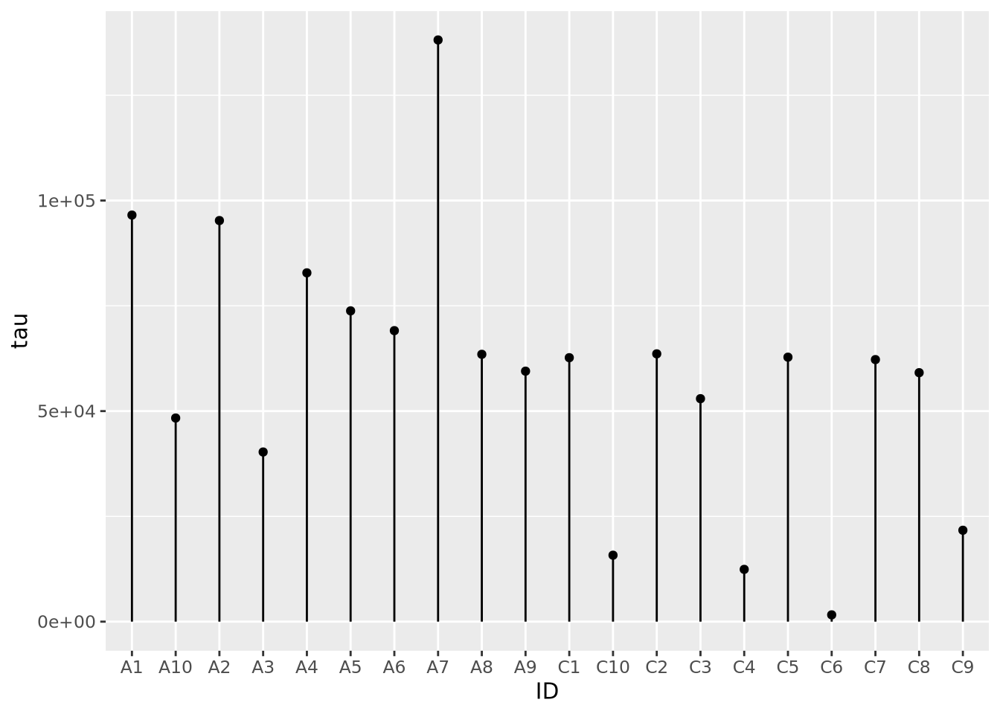

7 Data Visualization
Data visualization is a core component of both exploring data and communicating results to others. The goal of data visualization is to present data in a graphical way that shows the reader patterns that would not otherwise be visible. Despite its ubiquity and importance, effective data visualization is challenging, and while many tools and approaches exist there is no “gold standard” to follow in any meaningful sense. Rather, an effective visualization has the following properties:
- Depicts accurate data
- Depicts data accurately
- Shows enough, but not too much, of the data for the viewer to gain insight
- Is self contained - no additional information (except a caption) is required to understand the contents of the figure
Beyond these, a great visualization has some additional properties:
- Exposes patterns in the data not easily observable by other methods
- Invites the viewer to ask more questions about the data
In this chapter, we explore some of the principles of visualizing data and present many examples of plots and data visualization strategies commonly used in biological data analysis and bioinformatics.
7.1 Responsible Plotting
“Good plots empower us to ask good questions.” - Alberto Cairo, How Charts Lie
Plots are the primary vehicles of communicating scientific results. A very common and useful approach to writing scientific papers is to decide how many figures are needed to tell the story, and then create plots as necessary to convey that story. The text plays a supporting role for the figures. Effective data visualization has immense power to communicate the ideas (and beliefs) of the chart creator. Consider the famous “hockey stick graph” depicting average global temperatures created by Jerry Mahlman to describe the pattern of global warming shown by Mann, Bradkely & Hughes in 1999:
The data and models underlying the graph are very complex, but the story is clear: the past 100 years has seen a dramatic increase in average temperature in the northern hemisphere. This chart was one of the main drivers behind renewed main stream awareness of climate change, in no small part because it is easy to understand.
Given the power visualization has, and the increasing amount of data created by and required for daily life, it is ever more important that data visualization designers understand the principles and pitfalls of effective plotting. There is no easy solution to accomplishing this, but Alberto Cairo and Enrico Bertini, two journalists who specialize in data visualization and infographics, lay out five qualities of an effective visualization, in Cairo’s book the truthful art:
- It is truthful - the message conveyed by the visualization expresses some truth of the underlying data (to the extent that anything is “true”)
- It is functional - the visualization is accurate, and allows the reader to do something useful with the insights they gain
- It is insightful - the visualization should reveal patterns in the data that would otherwise be difficult or impossible to see and understand
- It is enlightening - the reader should leave the experience of engaging with the visualization convinced of something, ideally what the designer intends
- It is beautiful - it is visually appealing to its target audience, which helps the user more easily spend time and engage with the visualization
A full treatment of these ideas are included in, among others, three excellent books by Alberto Cairo, linked at the end of this section. The sections that follow describe some of the ideas and concepts that make visualization challenging and offer some guidance from the books mentioned on how to produce effective visualizations.
All three of these books were written by Alberto Cairo:
7.1.1 Visualization Principles
The purpose of data visualization is to illustrate (from the latin illustrare, meaning to light up or illuminate) relationships between quantities. Effective data visualization takes advantage of our highly evolved visual perception system to communicate these relationships to our cognitive and decision making systems. Therefore, our visualization strategies should take knowledge of our perceptual biases into account when deciding how to present data. Poor data visualization choices may make interpretation difficult, or worse lead us to incorrect inferences and conclusions.
7.1.2 Human Visual Perception
The human visual perceptual system is intrinsically integrated with our cognitive system. This makes it a predictive or interpretive system, where patterns of light received by the eye are pre-processed before the relatively slower executive function parts of our brains can make judgements. If we compare our perception of the world around us to a cinematic film, this makes our visual perception less raw video footage and more like a director’s commentary, where we add our interpretations, motivations, experiences, and anecdotal annotations to the images before we cognitively interpret them. Said differently, our visuo-cognitive system performs pattern recognition on the information we receive, and annotates the information with the patterns it thinks it sees. Very often, our cognition predicts patterns that are accurate, which therefore may be useful for us in making decisions, e.g. how to move out of the trajectory of a falling tree branch. However, sometimes our pattern recognition system, which is always trying to match patterns, sees patterns that don’t exist. Some of the most well known and well studied examples of these perceptual errors are optical illusions.
Optical illusions are images or animations that reveal the errors and bias of our perceptual system. Some illusions that are static images appear to move. Others distort the true relations between lines or shapes, or lead to incorrect or inconsistent perception of color. Consider the famous checkerboard shadow illusion created by Edward H. Adelson in 1995:
The image on the right clearly shows the two squares A and B are the same shade of grey, though A appears darker than B in the left image. This is because our perceptual system identifies color by contrasting adjacent colors. Since the colors adjacent to the A and B squares differ, our perception of the colors also differ. This example illustrates the contrast bias according to the value, or lightness, of the color, but the principle also applies to different hues:

An illusion that shows how our perceptual system distorts relationships between geometry is as follows:
The pattern of light and dark squares intersecting with the grid makes the lines appear “wavy” when all the horizontal and vertical lines are in fact straight, parallel, and perpendicular.
A final example illusion that is relevant for data visualization demonstrates a similar contextual bias of relative area:

The two blue dots in the image have the same radius, although the dot within the large black circles appears smaller.
Not only are there illusions that distort our perception of shapes that are there, but there are also illusions that convince us of the existence of shapes that are not there. The following illusion illustrates the point:
Seeing shapes when they aren’t there is nothing new to humans, of course.
Each of these perceptual biases relate to how we interpret many common data visualization strategies. We cannot avoid making these interpretive errors via our cognition alone, but we can use this knowledge in the design of our plots to mitigate their effects. To quickly summarize the perceptual biases we have demonstrated:
- We perceive the value and hue of colors in contrast to adjacent colors
- Certain types of geometry interfere with our ability to assess accurate relationships between geometric shapes
- We perceive the size (area) of shapes relative to nearby shapes
- We may perceive shapes where there are none drawn, based on nearby shapes
- We may perceive shapes that are similar to other familiar shapes, but have no true relationship
Each of these biases influence how we perceive and interpret plots, as we will see in the rest of this chapter.
7.1.3 Visual Encodings
Data visualization is the process of encoding numbers as positions, shapes, and colors in a two- or sometimes three-dimensional space. There are many different geometric properties we can use to create an encoding, including:
- Length, width, or height
- Position
- Area
- Angle/proportional area
- Shape
- Hue and value of colors
Examples of each of these encodings is depicted for a fictitious dataset of values between zero and one in the following figure:

The example encodings in the figure are among the most common and recognizable elements used in scientific plotting. Every time a reader examines a plot, they must decode it to a (hopefully) accurate mental model of the quantities that underlie it. Using familiar encodings that a reader will already know how to interpret makes this decoding cognitively easier, thereby enabling the plot to be more quickly understood.
Every quantity we wish to plot must be mapped to a visualization using one or more of these geometric encodings. By combining different variables with different encodings, we construct more complex plots. Consider the scatter plot, which contains two continuous values per datum, each of which is mapped to a visualization with a position encoding:

We might layer on another encoding by introducing a new variable that is the absolute value of the product of \(x\) and \(y\) and make the area of each datum proportional to that value:
data <- tibble(
x=rnorm(100),
y=rnorm(100,0,5),
`x times y`=abs(x*y)
)
data %>%
ggplot(aes(x=x,y=y,size=`x times y`)) +
geom_point()
We could layer yet more encodings to color each marker proportional to a value between 0 and 1, and also change the shape based on a category:
data <- mutate(data,
z=runif(100),
category=sample(c('A','B','C'), 100, replace=TRUE)
)
data %>%
ggplot(aes(x=x, y=y, size=`x times y`, color=z, shape=category)) +
geom_point()
Let’s say the sum of \(x\) and \(y\) is meaningful as well, and we are interested in the order of the data along this axis. We can connect all the points with lines by using a length encoding between adjacent data points after sorting by \(x+y\):
data <- mutate(data,
`x + y`=x+y,
) %>%
arrange(`x + y`) %>%
mutate(
xend=lag(x,1),
yend=lag(y,1)
)
data %>%
ggplot() +
geom_segment(aes(x=x,xend=xend,y=y,yend=yend,alpha=0.5)) +
geom_point(aes(x=x, y=y, size=`x times y`, color=z, shape=category))
The plot is becoming very busy and difficult to interpret because we have encoded six different dimensions in the same plot:
- \(x\) value has a positional encoding
- \(y\) value has another positional encoding
- The product \(xy\) has an area encoding
- \(z\) has a quantitative color value encoding
- category has a categorical encoding to shape
- The adjacency of coordinates along the \(x + y\) axis with a length encoding
Very complex plots may be built by thinking explicitly about how each dimension of the data are encoded, but the designer (i.e. you) must carefully consider whether the chosen encodings faithfully depict the relationships in the data.
These common encodings depicted in the earlier figure are not the only possibilities for mapping visual properties to a set of values. Consider the violin plot below:
set.seed(1337)
tibble(
value=rnorm(100),
category='A'
) %>%
ggplot(aes(x=category,y=value,fill=category)) +
geom_violin()
Here, geom_violin() has preprocessed the data to map the number of values
across the full range of values into a density. The density is then encoded with
a width encoding, where the width of the violin across the range of values,
which is encoded with a position encoding.
Most common chart types are simply combinations of variables with different encodings. The following table contains the encodings employed for different types of plots:
| Plot | \(x\) encoding | \(y\) encoding | note |
|---|---|---|---|
| scatter | position | position | |
| vertical bar | position | height | |
| horizontal bar | width | position | |
| lollipop | position | height for line + position for “head” | |
| violin | position | width | \(x\) transformed to range, \(y\) transformed to densities |
7.1.3.1 Elementary Perceptual Tasks
The purpose of visualizations is to enable the reader to construct an accurate mental model of the relationships or ideas contained within the data. As discussed in the Human Visual Perception section, not all visualizations allow for easy and accurate judgments of this kind due to the biases of our biological visuo-cognitive biases. However, some encodings of data allow more accurate judgments than others. William Cleveland and Robert McGill, two statisticians, proposed a hierarchy of visual encodings that span the spectrum of precision of our ability to accurately interpret visual information (Cleveland and McGill 1984). They defined the act of mapping a specific type of encoding to a cognitive model an elementary perceptual task. The hierarchy is depicted in the following figure:

The hierarchy is oriented from least to most cognitively difficult decoding tasks, where the easier tasks lend themselves to easier comparisons and judgements. For example, the easiest perceptual task is to compare visual elements with a position encoding that are all aligned across all charts; the positional decoding is the same for each chart, even if they use different stylistic elements. Further down the hierarchy, more cognitive effort is required to assess the precise relationships between elements of the plot, therefore possibly reducing the accuracy of our judgements.
This is not to say that it is always better for the reader to make highly accurate estimates. General trends and patterns may be more readily (and beautifully) apparent with less accurate encodings. Consider the following clustered heatmap:
# these data have two groups of samples with similar random data profiles
data <- as.matrix(
tibble(
A=c(rnorm(10),rnorm(10,2)),
B=c(rnorm(10),rnorm(10,2)),
C=c(rnorm(10),rnorm(10,2)),
D=c(rnorm(10,4),rnorm(10,-1)),
E=c(rnorm(10,4),rnorm(10,-1)),
F=c(rnorm(10,4),rnorm(10,-1))
)
)
rownames(data) <- paste0('G',seq(nrow(data)))
heatmap(data)
In this toy example, it may be sufficient for the reader’s comprehension to show that samples A, B, and C cluster together, as do D, E, and F, without requiring them to know precisely how different they are. In this case, the clustering suggested by the visualization should be presented in some other way that is more precise as well, for example a statistical comparison with results reported in a table, to confirm what our eyes tell us.
It is usually a good idea to plot data multiple ways, to ensure the patterns we see with one encoding are also seen with another. We might consider plotting the data again using a parallel coordinates plot:
library(GGally)
as_tibble(data) %>% mutate(
group=c(rep('Group 1',10),rep('Group 2',10))
) %>%
ggparcoord(columns=1:6,groupColumn=7)
For simplicity, we added a new variable group that is consistent with the
clustering we observed in the heatmap, which we might have extracted
computationally by cutting the row dendrogram into two flat clusters. The
parallel coordinate plot also visually confirms our interpretation of two
distinct clusters. We may now feel more comfortable including one or the other
plot in a figure, though this author finds the parallel coordinate plot more
accurate and enlightening. Recall the elementary perceptual task hierarchy:
aligned position encodings enable more accurate estimates of data. Heatmaps,
which use color value and hue, enable the least accurate estimates.
7.1.4 Some Opinionated Rules of Thumb
Effective data visualization is challenging, and there are no simple solutions or single approaches to doing it well. In this sense, data visualization is as much an art as a science. This author has some rules of thumb he applies when visualizing data:
- Visualize the same data in multiple ways. This will help ensure you aren’t being unduly influenced by the quirks of certain encodings or inherent visuo-cognitive biases.
- Perform precise statistical analysis to confirm findings identified when inspecting plots. Examine the underlying data and devise statistical tests or procedures to verify and quantify patterns you see.
- Informative is better than beautiful. Although it may be tempting to make plots beautiful, this should not be at the expense of clarity. Make them clear first, then make them beautiful.
- No plot is better than a useless plot. Some plots, while pretty, are useless in a literal sense; the information contained within the plot is of no use in either devising followup experiments or gaining insight into the data.
- Sometimes a table is the right way to present data. Tables may be considered boring, but they are the most accurate representation of the data (i.e. they ARE the data). Especially for relatively small datasets, a table may do the job of communicating results better than any plot.
- If there is text on the plot, you should be able to read it. Many results in biological data analysis have hundreds or thousands of individual points, each of which has a label of some sort. If the font size for labels is too small to read, or they substantially overlap each other making them illegible, either the plot needs to change or the labels should not be drawn. Same goes for axis labels.
- (Almost) every plot should have axis labels, tick marks and labels, a legend, and a title. There are a few exceptions to this, but a plot should be mostly understandable without any help from the text or caption. If it isn’t, it’s probably a poor visualization strategy and can be improved.
- When using colors, be aware of color blindness. There are several known forms of colorblindness in humans. Most default color schemes are “colorblind friendly” but sometimes these color combinations can be counterinutitive. Check sites like ColorBrewer to find color schemes that are likely to be colorblind friendly.
- Make differences visually appear as big as they mean. Scales on plots can distort the meaning of the underlying data. For example, consider the following two plots with identical data:
library(patchwork)
data <- tibble(
percent=c(86,88,87,90,93,89),
ID=c('A','B','C','D','E','F')
)
g <- ggplot(data, aes(x=ID,y=percent)) +
geom_bar(stat="identity")
g + coord_cartesian(ylim=c(85,95)) | g
The left plot, which had its y axis limited to the values of the data, make the differences between samples seem visually much larger than they actually are. If a difference between 87 and 93 percent is in fact meaningful, then this might be ok, but the context matters.
You will identify your own strategies over time as you practice data visualization, and these rules of thumb might not work for you. There is no one right way to do data visualization, and as long as you are dedicated to representing your data accurately, there is no wrong way.
7.2 Grammar of Graphics
The grammar of graphics is a system of rules that describes how data and graphical aesthetics (e.g. color, size, shape, etc) are combined to form graphics and plots. First popularized in the book The Grammar of Graphics by Leland Wilkinson and co-authors in 1999, this grammar is a major contribution to the structural theory of statistical graphics. In 2005, Hadley Wickam wrote an implementation of the grammar of graphics in R called ggplot2 (gg stands for grammar of graphics).
Under the grammar of graphics, every plot is the combination of three types of information: data, geometry, and aesthetics. Data is the data we wish to plot. Geometry is the type of geometry we wish to use to depict the data (e.g. circles, squares, lines, etc). Aesthetics connect the data to the geometry and defines how the data controls the way the selected geometry looks.
A simple example will help to explain. Consider the following made up sample metadata tibble for a study of subjects who died with Alzheimer’s Disease (AD) and neuropathologically normal controls:
ad_metadata## # A tibble: 20 x 8
## ID age_at_death condition tau abeta iba1 gfap braak_stage
## <chr> <dbl> <fct> <dbl> <dbl> <dbl> <dbl> <fct>
## 1 A1 81 AD 141017 230227 32959 26196 6
## 2 A2 78 AD 141082 214944 204381 26739 6
## 3 A3 80 AD 40788 46663 0 29308 2
## 4 A4 85 AD 78770 136101 98074 41177 3
## 5 A5 81 AD 110573 42893 140591 75334 5
## 6 A6 79 AD 125934 199602 133705 91069 5
## 7 A7 70 AD 32826 31016 34544 27905 1
## 8 A8 76 AD 95281 92308 116275 143759 4
## 9 A9 80 AD 55035 154453 62074 126360 2
## 10 A10 94 AD 53040 9099 39297 137833 2
## 11 C1 78 Control 35684 0 38523 59819 1
## 12 C2 77 Control 62182 29663 73422 52276 3
## 13 C3 73 Control 49062 106332 0 73822 2
## 14 C4 70 Control 10123 0 13962 96704 0
## 15 C5 74 Control 1530 2169 2002 83280 0
## 16 C6 73 Control 25514 49980 25771 53798 1
## 17 C7 81 Control 24367 48786 23961 17561 1
## 18 C8 69 Control 43628 36442 19467 41970 2
## 19 C9 78 Control 48923 64880 16367 110464 2
## 20 C10 77 Control 9688 3818 12424 59021 0For context, tau protein and amyloid beta peptides from the amyloid precursor protein aggregate into neurofibrillary tangles and A-beta plaques, respectively, the brains of people with AD. Generally, the amount of both of these pathologies is associated with more severe disease. Braak stage is a neuropathological assessment of the amount of pathology in a brain that is associated with the severity of disease, where 0 indicates absence of pathology and 6 with widespread involvement in multiple brain regions. Aggregation of tau is also a consequence of normal aging, so must accompany neurological symptoms such as dementia to indicate an AD diagnosis post mortem. Note we have control samples as well as AD.

The histology measures tau, abeta, iba1, and gfap have been quantified
using digital microscopy, where brain sections are stained with
immunohistochemistry to identify the location and degree of pathology; the
measures in the table are the number of pixels of a 400 x 400 pixel image of a
piece of brain tissue that fluoresce when stained with the corresponding
antibody. Tau and A-beta antibodies are specialized to the types of aggregated
proteins mentioned above and provide a quantification of the level of overall
AD pathology. Ionized calcium binding adaptor molecule 1 (IBA1) is a marker of
activated microglia, the resident
macrophages of the brain, which is an
indication of neuroinflammation. Glial fibrillary acidic protein (GFAP) is a
marker for activated astrocytes,
specialized cells that derive from the neuron lineage, are critical for
maintaining the blood brain
barrier, and are also
involved in the neuroinflammatory response.
Let’s say we wished to visualize the relationship between age at death and the
amount of tau pathology. A scatter plot where each marker is a subject with \(x\)
and \(y\) position corresponding to age_at_death and tau respectively. The
following R code creates such a plot with ggplot2:
ggplot(data=ad_metadata, mapping = aes(x = age_at_death, y=tau)) +
geom_point()All ggplot2 plots begin with the ggplot() function call, which is passed a
tibble with the data to be plotted. We then define the aesthetics are
defined by mapping the x coordinate to the age_at_death column and the y
coordinate to the tau column with aes(x = age_at_death, y=tau). Finally, the
geometry as ‘point’ with geom_point(), meaning marks will be made at pairs
of x,y coordinates. The plot shows what we expect given our knowledge of the
relationship between age and amount of tau; the two look to be positively
correlated.
However, we are not capturing the whole story: we know that there are both AD
and Control subjects in this dataset. How does condition relate to this
relationship we see? We can layer on an additional aesthetic of color to add
this information to the plot:
ggplot(data=ad_metadata, mapping = aes(x = age_at_death, y=tau, color=condition)) +
geom_point()This looks a little clearer, showing that Control subjects generally have both an earlier age at death and a lower amount of tau pathology. This might be a problem, however, since if the age distributions of AD and Control groups are different that might pose a problem with confounding. We should investigate this.
Instead of plotting age at death and tau against each other, we will examine the
distributions of each of these variables for AD and Control samples separately.
We will use the violin
geometry with
geom_violin() to look at the distributions of age_at_death:
ggplot(data=ad_metadata, mapping = aes(x=condition, y=age_at_death)) +
geom_violin()We can see immediately that there are big differences between the age distributions of the two groups. This is not ideal, but perhaps we can adjust for these effects in downstream analyses. We’d like to look at the tau distributions as well, but it would be nice to have these two plots side by side in the same plot. To do that, we will use another library called patchwork, which allows independent ggplot2 plots to be arranged together with a simple expressive syntax:
library(patchwork)
age_boxplot <- ggplot(data=ad_metadata, mapping = aes(x=condition, y=age_at_death)) +
geom_boxplot()
tau_boxplot <- ggplot(data=ad_metadata, mapping=aes(x=condition, y=tau)) +
geom_boxplot()
age_boxplot | tau_boxplot # this puts the plots side by sideThis confirms our suspicion, and also reveals a serious problem with our samples: we have strong confounding of tau and age at death between AD and Control samples. This means that if we look for differences between AD and Control, we won’t know if the difference is due to the amount of tau pathology or due to age of the subjects. With this sample set, we simply cannot confidently answer that question. Just a few simple plots alerted us to this problem; hopefully more expensive datasets have not already been generated for these samples, so that hopefully different subjects are available that could avoid this confounding.
This has been a biological data analysis oriented tutorial on plotting meant to illustrate the principles of the grammar of graphics. Namely, every plot has data, geometry, and aesthetics that can be independently controlled to produce many types of plots. Many of these plots have names, like scatter plots and boxplots, but as you compose different types of geometries and aesthetics together you may find yourself generating plots that aren’t so easily named.
The next sections of this chapter are a kind of “cook book” of different kinds plots you can generate with data of different shapes. It is not intended to be comprehensive, but a helpful guide when you are trying to decide how to visualize your own datasets.
If you want to go directly to the comprehensive documentation of the many types of ggplot2 plots, peruse the R Graph Gallery site.
7.2.1 ggplot mechanics
ggplot has two key concepts that give it great flexibility: layers and
**scales*.
Every plot has one or more layers that contain a type of geometry that
represents a data encoding. In general, each layer will only have one geometry
type, e.g. points or lines, but the geometry might be complex, e.g. density
plots. The layers added to a plot form a stack, where the layers added first are
beneath those added later. The geometry in each layer may draw from the same
data, or each may have its own. Each layer may also share the aesthetic mapping
from the ggplot() call, or may have its own. This is why both the ggplot()
function and each individual geom_X() function can accept data and aesthetic
mappings. The package comes with a large number of geometries described in its
reference documentation.
The geometry in each layer maps the data values to visual properties using
scales. A scale may map a data range to a pixel range, or to a color on a color
gradient, or one of a set of discrete colors or shapes. ggplot provides
reasonable default scales for each geometry type. You can override these
defaults by using the scale_X
functions.
The ggplot2 book is an excellent resource for all things ggplot2.
7.3 Plotting One Dimension
The simplest plots involve plotting a single vector of numbers, or several such
vectors (e.g. for different samples). Each value in the vector typically
corresponds to a category or fixed value, for example the tau column from the
example above has pairs of (ID, tau value). The order of these numbers can be
changed, but the vector remains one dimensional or 1-D.
7.3.1 Bar chart
Bar charts map length (i.e. the height or width of a box) to the scalar value of a number. The difference in visual length can help the viewer notice consistent patterns in groups of bars, depending on how they are arranged:
Note the stat="identity" argument is required because by default geom_bar
counts the number of values for each value of x, which in our case is only ever
one. This plot is not particularly helpful, so let’s change the fill color of
the bars based on condition:
Slightly better, but maybe we can see even more clearly if we sort our tibble by tau first. Sorting elements in these 1-D charts is somewhat complicated, and is explained in the [Reordering 1-D Data Elements] section below.
Bar charts can also plot negative numbers. In the following example, we center the tau measurements by subtracting the mean from each value before plotting:
mutate(ad_metadata, tau_centered=(tau - mean(tau))) %>%
ggplot(mapping = aes(x=ID, y=tau_centered, fill=condition)) +
geom_bar(stat="identity")7.3.2 Lollipop plots
Similar to bar charts, so-called “lollipop plots” replace the bar with a line segment and a circle. The length of the line segment is proportional to the magnitude of the number, and the point marks the length of the segment as a height on the y or length on the x axis, depending on orientation.
ggplot(ad_metadata) +
geom_point(mapping=aes(x=ID, y=tau)) +
geom_segment(mapping=aes(x=ID, xend=ID, y=0, yend=tau))Note that aes() mappings can be made on the ggplot() object or on each
individual geometry function call, to specify different mappings based on
geometry.
7.3.3 Stacked Area charts
Stacked area charts can visualize multiple 1D data that share a common categorical axis. The charts consist of one line per variable with vertices that correspond to x and y values similar to a bar or lollipop plots. Each variable is plotted using the previous one as a baseline, so that the height of the data points for each category is proportional to their sum. The space between the lines for each variable and the previous one are filled with a color. The following plot visualizes the amount of marker stain for each of the four genes for each individaul:
pivot_longer(
ad_metadata,
c(tau,abeta,iba1,gfap),
names_to='Marker',
values_to='Intensity'
) %>%
ggplot(aes(x=ID,y=Intensity,group=Marker,fill=Marker)) +
geom_area()We notice that subject A4 has the highest overall level of marker intensity,
followed by A1, A7, etc. The control samples overall have less intensity across
all markers. Certain samples, A2 and C5, have little to no abeta aggregation,
and C6 has little to no tau.
Stacked area plots require three pieces of data:
- x - a numeric or categorical axis for vertical alignment
- y - a numeric axis to draw vertical proportions
- group - a categorical variable that indicates which (x,y) pairs correspond to the same line
In the example above, we needed to pivot our tibble so that the different
markers and their values were placed into columns Marker and Intensity,
respectively. Data for stacked bar charts will usually need to be in this ‘long’
format, as described in Rearranging Data.
Sometimes it is more helpful to view the relative proportion of values in each category rather than the actual values. The result is called a proportional stacked area plots. While not a distinct plot type, we can create one by preprocessing our data by dividing each value by the column sum:
pivot_longer(
ad_metadata,
c(tau,abeta,iba1,gfap),
names_to='Marker',
values_to='Intensity'
) %>%
group_by(ID) %>% # we want to divide each subjects intensity values by the sum of all four markers
mutate(
`Relative Intensity`=Intensity/sum(Intensity)
) %>%
ungroup() %>% # ungroup restores the tibble to its original number of rows after the transformation
ggplot(aes(x=ID,y=`Relative Intensity`,group=Marker,fill=Marker)) +
geom_area()
Now the values for each subject have been normalized to each sum to 1. In this
way, we might note that the relative proportion of abeta seems to be greater
in AD samples than Controls, but that may not be true of tau. These
observations may inspire us to ask these questions more rigorously than we have
done so far by inspection.
7.4 Visualizing Distributions
The distribution is one of the most important properties of a set of numbers. A distribution describes the general “shape” of the numbers, i.e. what is the relative frequency of the values, or ranges of values, within the data. Understanding the distribution of a data set is critical when choosing methods to apply, since many methods are only appropriate when data is distributed in certain ways, e.g. linear regression assumes the response variable is normally distributed, otherwise the result of the model cannot be interpreted properly. Often, we don’t know how our data are distributed when we obtain it and so we must examine the distribution empirically. The visualizations in this section are all used for the purpose of depicting the distribution of a set of numbers.
7.4.1 Histogram
The most common way to plot the distribution of a 1-D set of data is the
histogram. The histogram divides up
the range of a dataset from minimum to maximum into bins usually of the same
width and tabulates the number of values that fall within each bin. Below is a
histogram of our age_at_death measurement for all samples:
ggplot(ad_metadata) +
geom_histogram(mapping=aes(x=age_at_death))Note that the histogram does not look very complete, because there are only 20 values in our data. We can mitigate this somewhat by increasing the number of bins the data range is divided into:
ggplot(ad_metadata) +
geom_histogram(mapping=aes(x=age_at_death),bins=10)
This is a little bit better, but there are still some bins (76-79, 84-87) that have no values. Compare this to the following synthetic dataset of 1000 normally distributed values:

For distributions with a small number of samples, histograms might not be the best visualization. We will continue with synthetic normally distributed dataset for the remaining examples.
ggplot allows you to easily plot multiple distributions on the same plot:
tibble(
x=c(rnorm(1000),rnorm(1000,mean=4)),
type=c(rep('A',1000),rep('B',1000))
) %>%
ggplot(aes(x=x,fill=type)) +
geom_histogram(bins=30, alpha=0.6, position="identity")The alpha=0.6, position="identity" arguments makes the bars partially
transparent so you can see the overlap more clearly.
7.4.2 Density
Another way to describe a distribution is with a density plot. Instead of binning the values into intervals and drawing bars with height proportional to the number of values in each bin, a density plot draws a smoothly interpolated line that approximates the distribution instead. A key difference between a histogram and a density plot is the density plot is always normalized so the integral under the curve is approximately 1, whereas a histogram may be either counts or, if the counts in each bin are divided by the total number of data points, a proportion.
Compare the histogram and density plots
of the age_at_death variable from our example tibble:
library(patchwork)
hist_g <- ggplot(ad_metadata) +
geom_histogram(mapping=aes(x=age_at_death),bins=30)
density_g <- ggplot(ad_metadata) +
geom_density(mapping=aes(x=age_at_death),fill="#c9a13daa")
hist_g | density_gNotice the overall shape of the two distributions is similar, with the highest values in both around age 77. The density plot is a smoother representation of a histogram, but its accuracy is still highly sensitive to the number of measurements used to construct it. Compare the histogram and density plots of two sets of 1000 normally distributed samples with different means:
library(patchwork)
normal_samples <- tibble(
x=c(rnorm(1000),rnorm(1000,mean=4)),
type=c(rep('A',1000),rep('B',1000))
)
hist_g <- ggplot(normal_samples) +
geom_histogram(
mapping=aes(x=x,fill=type),
alpha=0.6,
position="identity",
bins=30
)
density_g <- ggplot(normal_samples) +
geom_density(
mapping=aes(x=x,fill=type),
alpha=0.6,
position="identity"
)
hist_g | density_gAgain the two types of plots depict similar distributions, although they are different enough to possibly suggest different interpretations. In general, density plots might be preferable over histograms if the data are noisy or sparse in that they produce cleaner plots, but potentially at the expense of accuracy when the number of samples is low.
7.4.3 Boxplot
Box plots, or box and whisker plots, are extremely common when used to describe distributions. Below is a boxplot of age at death divided by condition:
ggplot(ad_metadata) +
geom_boxplot(mapping=aes(x=condition,y=age_at_death))
Boxplots are drawn assuming the data are unimodal (i.e. shaped like a hill, possibly slanted to one side or the other), where the extents of the box represent the 1st and 3rd quartile of the data, the central line is the median, the whiskers are drawn as 1.5 times the value outside the 1st and 3rd quartiles. Sometimes individual values more extreme than the whiskers are drawn individually to identify them as outliers.

However, boxplots have some significant shortcomings. Primarily, the rectangle of the inner quartile range does not describe the actual distribution of the samples within it. Although the median can give a sense of skewness, if the data are not unimodal this may be misleading. Consider the following distributions plotted as boxplots or as violin plots (described in the next section):
library(patchwork)
normal_samples <- tibble(
x=c(rnorm(1000),rnorm(1000,4),rnorm(1000,2,3)),
type=c(rep('A',2000),rep('B',1000))
)
g <- ggplot(normal_samples, aes(x=type,y=x,fill=type))
boxplot_g <- g + geom_boxplot()
violin_g <- g + geom_violin()
boxplot_g | violin_g
The two distributions look almost identical in the boxplot figure; however they are dramatically different when visualized using a method like a violin plot where the contours of the entire distribution are depicted. Unless you are certain that your data are unimodal, one of the other distribution visualization methods in this section will likely more accurately depict your data than a boxplot.
7.4.4 Violin plot
As seen in the last section, a violin
plot is another way
to depict a distribution by producing a shape where the width is proportional to
the value along the x or y axis, depending on orientation. The “violin” shape is
similar in principle to a histogram or a density plot, in that it describes the
contour of all the data in the distribution, not just the quantiles and extents,
as in a box plot. Below is a violin plot of the tau measures from our example
tibble:
ggplot(ad_metadata) +
geom_violin(aes(x=condition,y=tau,fill=condition))
The violin plot is both more and less descriptive than a boxplot; it does depict the entire distribution of the data, but also doesn’t include features like median by default.
7.4.5 Beeswarm plot
The beeswarm plot is similar to a violin plot, but instead of plotting the contours of the data, it plots the data itself as points like in a scatter plot. The individual values of the distribution are organized vertically and spaced such that the points don’t overlap. In this plot, the distribution of age at death is plotted for each kind of sample and the markers are colored by the amount of tau:
library(ggbeeswarm)
ggplot(ad_metadata) +
geom_beeswarm(aes(x=condition,y=age_at_death,color=condition),cex=2,size=2)We may not have noticed before that our AD samples have a big gap in ages between 74 and 81; since the beeswarm plot displays all the data, we can see it easily here.
Beeswarm plots are typically only useful when the number of values is within a range; not too many and not too few. The example above is close to having too few values per group for this plot to be useful, but consider the following with too many samples:
normal_samples <- tibble(
x=c(rnorm(1000),rnorm(1000,4),rnorm(1000,2,3)),
type=c(rep('A',2000),rep('B',1000))
)
ggplot(normal_samples, aes(x=type,y=x,color=type)) +
geom_beeswarm()This plot likely has too many samples to be the right choice (it’s also ugly), but it does give an idea of the distribution of the data.
In the previous examples the markers for each group also determined the color of the group. This makes the chart a bit easier to read and more pleasing to the eye, but is technically redundant. You can use however profitably however to color markers by some other value that might be of interest. Consider this final example where markers are colored by another randomly generated variable:
normal_samples <- tibble(
x=c(rnorm(100),rnorm(100,4),rnorm(100,2,3)),
type=c(rep('A',200),rep('B',100)),
category=sample(c('healthy','disease'),300,replace=TRUE)
)
ggplot(normal_samples, aes(x=type,y=x,color=category)) +
geom_beeswarm()
We are now effectively visualizing three dimensions which may provide insight into the data.
7.4.6 Ridgeline
If you have many non-trivial distributions that you would like the user to compare, a good option is a ridgeline chart. The ridgeline plot is simply multiple density plots drawn for different variables within the same plot. Like the beeswarm plot, ridgeline plots are provided by another package outside ggplot2.
library(ggridges)
tibble(
x=c(rnorm(100),rnorm(100,4),rnorm(100,2,3)),
type=c(rep('A',200),rep('B',100)),
) %>%
ggplot(aes(y=type,x=x,fill=type)) +
geom_density_ridges()
Many distributions may be plotted:
7.5 Plotting Two or More Dimensions
Multi-dimensional plots allow relationships between different quantities to be depicted visually. As mentioned in the [Elemental Perceptual Tasks] section, this involves mapping data to visual elements using different encodings. The plot types in this section are examples of these different approaches to combining visual data encodings.
7.5.1 Scatter Plots
Scatter plots visualize pairs of quantities, usually continuous, as points in a two dimensional space. Most commonly, the points are plotted in cartesian coordinates, but polar coordinates or other types of coordinate systems.
ggplot(ad_metadata,mapping=aes(x=abeta, y=tau)) +
geom_point(size=3)
The geom_point() geometry draws a shape, circle by default, at pixel
coordinates proportional to each \((x,y)\) pair. The shape may be changed by
specifying the shape=N parameter to geom_point, where N is an integer ID
of the shape. The following plot shows which IDs correspond to which shapes:
g <- ggplot()
for(x in 0:5) {
for(y in 0:4) {
if(x+y*6 < 26) {
g <- g + geom_point(aes(x=x,y=y),tibble(x=x,y=y),shape=x+y*6,size=8) +
geom_label(aes(x=x,y=y+0.5,label=label),tibble(x=x,y=y,label=x+y*6))
}
}
}
g
However, geom_points() will choose up to six different shapes for you if you
map a categorical encoding to the shape aesthetic:
ggplot(ad_metadata,mapping=aes(x=abeta, y=tau, shape=condition)) +
geom_point(size=3) Controlling which shapes are mapped to which value can be accomplished with
Controlling which shapes are mapped to which value can be accomplished with
scale_shape_manual():
ggplot(ad_metadata,mapping=aes(x=abeta, y=tau, shape=condition)) +
geom_point(size=3) +
scale_shape_manual(values=c(3,9))
Color encodings can also be added using either a continuous or discrete values:
library(patchwork)
g <- ggplot(ad_metadata)
g_condition <- g + geom_point(mapping=aes(x=abeta, y=tau, color=condition),size=3)
g_age <- g + geom_point(mapping=aes(x=abeta, y=tau, color=age_at_death),size=3)
g_condition / g_age
7.5.2 Bubble Plots
A close relative of the scatter plot is the bubble plot. A bubble plot is a scatter plot where the area of the point markers is proportional to a third continuous dimension. Consider the plot from above, with age at death encoded as the area of each point:
ggplot(ad_metadata,mapping=aes(x=abeta, y=tau, size=age_at_death)) +
geom_point(alpha=0.5) In this example, the markers have been given 50% transparency, so overlapping
bubbles may be discerned more easily.
In this example, the markers have been given 50% transparency, so overlapping
bubbles may be discerned more easily.Recall from the Human Visual Perception section that it is difficult for humans to accurately assess the relative sizes of shapes that are not near each other. Bubble plots may be useful in some instances, but should be used carefully.
7.5.3 Connected Scatter Plots
Another close relative of the scatter plot is the connected scatter plot. A connected scatter plot is simply a scatter plot where certain pairs of points are connected with a line in addition to the markers. Any pairs of points may have lines connecting them, but most often the line indicates some dimension of time, i.e. two points that are sequential in time are connected. Below is a connected scatter plot with a line drawn from the youngest to oldest age at death:
arrange(ad_metadata,age_at_death) %>%
mutate(
x=abeta,
xend=lag(x,1),
y=tau,
yend=lag(y,1)
) %>%
ggplot() +
geom_segment(aes(x=abeta, xend=xend, y=tau, yend=yend)) +
geom_point(aes(x=x,y=y,shape=condition,color=condition),size=3)
The plot suggests that perhaps the AD and Control samples might be closer in age within groups than between. We can confirm this using another type of plot, e.g. density grouped by condition.
7.5.4 Line Plots
Line plots connect pairs of points with a line without drawing a symbol at each
point. The geom_line() function will draw lines between pairs of points sorted
by \(x\) axis by default:
This may be useful when plotting multiple lines using the group aesthetic
mapping:
pivot_longer(ad_metadata,
c(tau,abeta,iba1,gfap),
names_to='Marker',
values_to='Intensity'
) %>%
ggplot(ad_metadata,mapping=aes(x=ID, y=Intensity, group=Marker, color=Marker)) +
geom_line()
This plot is similar to a parallel coordinate plot, in that all four dimensions of each sample are displayed using a position encoding.
7.5.5 Parallel Coordinate Plots
Parallel coordinate plots are line plots where each of possibly many continuous variables are given vertical position encodings and each sample has its own line. Unlike the line plot above, each vertical axis can have a different scale, thus allowing plots of variables with very different value ranges. The following is a parallel coordinate plot of our AD metadata:
library(GGally)
ggparcoord(ad_metadata,
columns=c(2,4:8),
groupColumn=3,
showPoints=TRUE
) +
scale_color_manual(values=c("#bbbbbb", "#666666"))
All the variables have been scaled and centered to have mean zero and standard deviation 1, and the values plotted using a position encoding vertically long each. Each line is a different subject, and have been colored based on the type of subject, either AD or control. This encoding allows us to make a number of observations about the samples, e.g. except for gfap, AD samples have consistently higher values than Controls.
A common way to specify colors is with a six digit
hexadecimal code, e.g. #2ca9f3.
These codes form a triplet of (rr,gg,bb), where rr is the value of the
color red, gg the value of green, and bb for blue, examples:
-
#000000is the color black, or a value of zero in all three colors -
#ffffffis the color white, with maximum value for all three colors -
#ff0000is the color red, with full red value and no value for green or blue -
#0000ffis the color blue, with full blue value and no value for red or green -
#2ca9f3is this color, a combination of red, green, and blue
All colors in tidyverse may be specified with these hexadecimal color codes. See web colors for more information on how to specify colors in this way.
7.5.6 Heatmaps
Heatmaps visualize values associated with a grid of points \((x,y,z)\) as a grid of colored rectangles, where \(x\) and \(y\) define the grid point coordinates and \(z\) is a continuous value. A common heatmap you might have seen is the weather map, which plots current or predicted weather patterns on top of a geographic map:

The color at each grid coordinate, which in this case are spaced closely enough so we cannot distinguish the boundaries between the rectangles without zooming in, is proportional to the type and intensity of weather at that location. In the weather map, the weather values are mapped to a color scales that describe the amount of precipitation as shown in the map legend.
In biology, heatmaps are more typically used to visualize matrices. The concept is the same as with the weather map, except instead of geographic coordinates the grid corresponds to the rows and columns of a data matrix, and the color of each grid point is mapped to a color scale chosen by the designer. The grid of rectangles is typically not overlayed over anything, as in the weather map, but is instead the entire visualization.
We can create heatmap in R using the base R
heatmap()
function. Below is a heatmap visualization of our histological markers from the
AD example:
# heatmap() requires a R matrix, and cannot accept a tibble or a dataframe
marker_matrix <- as.matrix(
dplyr::select(ad_metadata,c(tau,abeta,iba1,gfap))
)
# rownames of the matrix become y labels
rownames(marker_matrix) <- ad_metadata$ID
heatmap(marker_matrix)
The lower right portion of the plot is the heatmap, where the matrix values are visualized on a color gradient from light yellow to dark red.
More precisely, the heatmap() function creates a clustered heatmap, where
the rows and columns have been hierarchically
clustered separately and ordered according to how
similar they are to one another. The left and top line diagrams are
dendrograms, which depict the similarity between rows and
columns as a tree, where the total branch length summed from one row/column to
another is proportional to the dissimilarity (i.e. numeric distance) of the two.
The base R heatmap() function performs many different operations on the input
matrix than just draw a grid of rectangles in proportion to the values. By
default, it also:
- performs hierarchical clustering of the rows and columns using a Euclidean distance function and orders them accordingly
- draws dendrograms on the rows and columns according to the clustering
- scales the data in the rows to have mean zero and standard deviation 1
Each of these defaults can be changed by passing arguments into the function call. The following turns off all of the extra functionality and produces only a heatmap of the matrix:
heatmap(
marker_matrix,
Rowv=NA,
Colv=NA,
scale="none",
) Note how the colors in this heatmap are very different for many of the
marker/sample pairs. This illustrates some of the dangers of using heatmaps,
which are described more fully in the How To Use Heatmaps Responsibly section
below.
Note how the colors in this heatmap are very different for many of the
marker/sample pairs. This illustrates some of the dangers of using heatmaps,
which are described more fully in the How To Use Heatmaps Responsibly section
below.
The base R heatmap function has the major drawback that no color key is provided
to indicate how values map to colors. Another heatmap
heatmap.2
function in the gplots package
which has a similar interface to heatmap(), but allows provides more
parameters to control the behavior of the plot and includes a color key:

The extra decoration (dashed and solid vertical lines called traces by the
package) provide another way to understand the magnitude of the value in each
cell. Refer to the gplots documentation of
heatmap2
for more information on how to interpret the trace (hint: you may turn it off
with by passing the argument trace = "none" to the function call).
Both heatmap() and heatmap.2() provide a useful method to annotate rows and
columns with a categorical variable. Each of our subjects either has AD or is a
control, and we can add a color bar along the margin of the plot to indicate the
status of each subject:
condition_colors <-
transmute(
ad_metadata,
color=if_else(condition == "AD","red","blue")
)
heatmap(
marker_matrix,
RowSideColors=condition_colors$color
)
And with heatmap.2:
heatmap.2(
marker_matrix,
RowSideColors=condition_colors$color
)
Heatmaps may also be created using ggplot and the
geom_tile geometry.
This method of generating heatmaps is more “manual” than the other functions
covered so far, and so are both flexible and require more work to obtain certain
functionality (e.g. clustering, color bars on side margins, etc). This geometry
requires the data to be in long format, with one column for x, y, and z
values:
pivot_longer(
ad_metadata,
c(tau,abeta,iba1,gfap),
names_to="Marker",
values_to="Intensity"
) %>%
ggplot(aes(x=Marker,y=ID,fill=Intensity)) +
geom_tile()
Note this ggplot method does not scale or reorder rows or columns.
7.5.6.1 Specifying Heatmap Colors
The colors of the heatmap may be changed by passing one of the native color
palettes
to the heatmap function with the col argument:
# native R colors are:
# - rainbow(n, start=.7, end=.1)
# - heat.colors(n)
# - terrain.colors(n)
# - topo.colors(n)
# - cm.colors(n)
# the n argument specifies the number of colors (i.e. resolution) of the colormap to return
heatmap(marker_matrix,col=cm.colors(256))
To change the color using ggplot and geom_tile(), use the
scale_fill_gradientn
function to specify a different color palette:
pivot_longer(
ad_metadata,
c(tau,abeta,iba1,gfap),
names_to="Marker",
values_to="Intensity"
) %>%
ggplot(aes(x=Marker,y=ID,fill=Intensity)) +
geom_tile() +
scale_fill_gradientn(colors=cm.colors(256)) The native color palettes in R look as follows:
The native color palettes in R look as follows:
Instead of these color palettes, you may use one of the ColorBrewer palettes in the RColorBrewer package
library(RColorBrewer)
display.brewer.all()
There are very many color palettes to choose from, and you may also create your
own palettes. Creating color palettes is somewhat
complicated
in base R, but ggplot() provides convenient
functions
scale_fill_gradient() and scale_fill_gradient2() to produce gradient scales
with 2 or 3 colors, respectively. More discussion on how to choose colors is
described in the next section.
7.5.7 How To Use Heatmaps Responsibly
While heatmaps may seem intuitive, they are actually quite complicated and can be difficult to create in a way that accurately depicts the underlying matrix. As described in the Human Visual Perception section, our visual system estimates the hue and value of colors based on adjacent colors. For large heatmaps with many rows and columns, it is therefore very difficult to accurately estimate relationships across wide sections of the heatmap. This may not always be problematic, as heatmaps might only be needed to convey general patterns in a dataset. However, the designer has a large degree of control over how the heatmap utilizes hue and value when mapping to the underlying numbers, and those choices have a large impact on the interpretation of the chart. Before data can be effectively visualized in a heatmap, some preprocessing is usually required to yield a useful plot.
There are four major factors that influence how a dataset can be visualized as a heatmap:
- The type of features, i.e. whether the features are continuous or discrete
- The relative scales of the features
- The total range of the data
- Whether or not the data are centered
7.5.7.1 The Type of the Features
There are two broad types of features: discrete and continuous. The data
elements of a discrete feature take on one of a finite set of values. For
example, a discrete feature might include values like 0 and 1, Case and
Control or only the integers between 1 and 6. In general, we are primarily
interested to know whether samples with the same discrete value group together,
so ideally all colors that are mapped to discrete features will be easily
distinguishable from one another. As the number of possible values the feature
may take increases, finding a set of colors that are all distinguishable from
one another becomes increasingly difficult. Consider the following three
heatmaps that show different discrete data:
library(patchwork)
random_letters <- function(n) {
letters <- c('A','B','C','D','E','F','G','H','I','J')
sample(letters[1:n],10,replace=TRUE)
}
features <- paste0('F',seq(10))
g_binary <- tibble(
feature=features,
a=random_letters(2),
b=random_letters(2),
c=random_letters(2)
) %>%
pivot_longer(c(a,b,c)) %>%
ggplot(aes(x=name,y=feature,fill=value)) + geom_tile()
g_trinary <- tibble(
feature=paste0('F',seq(10)),
a=random_letters(3),
b=random_letters(3),
c=random_letters(3)
) %>%
pivot_longer(c(a,b,c)) %>%
ggplot(aes(x=name,y=feature,fill=value)) + geom_tile()
g_unmanageable <- tibble(
feature=paste0('F',seq(10)),
a=random_letters(10),
b=random_letters(10),
c=random_letters(10)
) %>%
pivot_longer(c(a,b,c)) %>%
ggplot(aes(x=name,y=feature,fill=value)) + geom_tile()
g_binary | g_trinary | g_unmanageable
The first and second heatmaps have 2 and 3 discrete values each, and the colors are easy to tell apart. The third heatmap has 10 discrete values and it is very difficult to distinguish between colors in different parts of the plot.
Continuous features can take any of a (possibly infinite) range of real values, e.g. \(-3.252\), \(858,352\), or \(0\). These values will be mapped to colors of a gradient, where two or more colors are blended together linearly from one color to another, and values are mapped within this range of colors in proportion to their relative magnitudes. Two gradients, one with two colors and one with three, are shown below:
g_two_up <- tibble(
ID='a',
x=seq(0,1,0.1),
val=x
) %>%
ggplot(aes(x=x,y=ID,fill=val)) +
geom_tile() +
scale_fill_gradient(low="#990000", high="#ffdddd")
g_two_down <- tibble(
ID='a',
x=seq(0,1,0.1),
val=x
) %>%
ggplot(aes(x=x,y=ID,fill=val)) +
geom_tile() +
scale_fill_gradient(low="#ffdddd", high="#990000")
g_three <- tibble(
ID='a',
x=seq(0,1,0.1),
val=x
) %>%
ggplot(aes(x=x,y=ID,fill=val)) +
geom_tile() +
scale_fill_gradient2(low="#990000", mid="#ffffff", high="#9999ff", midpoint=0.5)
g_two_up / g_two_down / g_three
These three example gradients comprise the most common types of color mappings. The first two with one color differ in which color (i.e. lighter or darker) is mapped to the largest value. The third gradient is called a diverging palette, because the maximum and minimum values show divergence from some central value, which in this case is 0.5. For diverging color palettes, the value in the middle of the gradient is often very important, as it defines which values are visualized in which color. More on diverging color palettes is in the following sections.
In general, the types of features, i.e. discrete or continuous, must all be the same for a heatmap to be meaningful. Once this has been determined, the values of each feature must be examined and possibly transformed, as described next.
7.5.7.2 Scales of Features
The second important consideration when plotting a heatmap is to understand the nature of the different features and how they relate to one another. Specifically, the features must all be on a comparable scale, or transformed appropriately to attain this, for the colors in the heatmap to be visible. Consider the following heatmap with three features plotted as columns and 10 samples as rows:
data <- tibble(
ID=paste0('F',seq(10)),
a=rnorm(10,0,1),
b=rnorm(10,100,20),
c=rnorm(10,20,5)
) %>%
pivot_longer(c(a,b,c))
ggplot(data,aes(x=name,y=ID,fill=value)) +
geom_tile()
The scales of the different features \(a\), \(b\), and \(c\) are different, namely they have means of 0, 100, and 20, respectively. This an be clearly seen when the data are plotted as a beeswarm plot:
library(ggbeeswarm)
ggplot(data) +
geom_beeswarm(aes(x=name,y=value,color=name))
As the data are on dramatically different scales, only the feature with the largest spread (b) can be distinguished in the heatmap.
In order to visualize all these data meaningfully in the same plot, the features must be scaled so they are all comparable. Typically this is done by standardizing the features to have a mean of zero and a standard deviation of 1:
data %>%
pivot_wider(id_cols='ID',names_from=name) %>%
mutate(
across(c(a,b,c),scale)
) %>%
pivot_longer(c(a,b,c)) %>%
ggplot(aes(x=name,y=ID,fill=value)) +
geom_tile() Now each feature has a mean of zero and standard deviation of one:
Now each feature has a mean of zero and standard deviation of one:
data %>%
pivot_wider(id_cols='ID',names_from=name) %>%
mutate(
across(c(a,b,c),scale)
) %>%
pivot_longer(c(a,b,c)) %>%
ggplot() +
geom_beeswarm(aes(x=name,y=value,color=name))
Now that the data are all on the same scale, each is mapped across the full range of the color palette. In this case, we explicitly scaled each feature, but it is possible to scale by each sample as well:
data %>%
pivot_wider(id_cols=name,names_from=ID) %>%
mutate(
across(starts_with('F'),scale)
) %>%
pivot_longer(starts_with('F'),names_to="ID") %>%
ggplot(aes(x=name,y=ID,fill=value)) +
geom_tile()
This result is dramatically different, and possibly not what you intended. In this case the effect is somewhat obvious - all the values in b are the largest, the values in c are the smallest, and c is in between. However, in general this may not be the case, and care should be taken to understand which dimension of the data has been scaled.
Because features are typically not assumed to be on the same scale, the base R
heatmap() and heatmap2() functions automatically scale the rows of the
data prior to visualization.
7.5.7.3 Total data range
As we saw in the previous section on scaling features, the color mapping is highly sensitive to the range of all values in the data. Even if the features or samples have been properly scaled, extreme values in any of the features can render a heatmap uninformative. Consider the following heatmap that visualizes data that have a single extreme outlier:
tibble(
ID=paste0('F',seq(10)),
a=rnorm(10,0,1),
b=rnorm(10,0,1),
c=c(rnorm(9,0,1),1e9)
) %>%
pivot_longer(c(a,b,c)) %>%
ggplot(aes(x=name,y=ID,fill=value)) +
geom_tile()
The single extreme value compressed all the other color values to the colors on the lowest end of the color palette. This anomalous value must be removed before differences between the other variables will be visible.
The issue above is caused by the fact that the default color gradient scales assume there is a linear mapping between the values and the palette. This is equivalent to assuming the data are relatively well distributed across a linear range of values, as in a normal or uniform distribution. When the data do not follow this assumption, any resulting heatmaps may suffer the same issue as when there are extreme values. Consider the following heatmap with data randomly sampled from an exponential distribution:
data <- tibble(
ID=paste0('F',seq(10)),
a=10**rnorm(10,4,1),
b=10**rnorm(10,4,1),
c=10**rnorm(10,4,1)
) %>%
pivot_longer(c(a,b,c))
data %>%
ggplot(aes(x=name,y=ID,fill=value)) +
geom_tile()
The data are similarly compressed toward the lower end of the scale due to the uneven distribution of data. In this case, we might consider taking a log transformation of the data prior to drawing the heatmap:

On a log scale, the heatmap visualizes the range of values linearly across the gradient. In this case, we knew a log transform was appropriate to cast the data onto an approximately linear scale, though in general this will need to be explored for each dataset.
7.5.7.4 Whether or not the data are centered
The final important consideration when creating a heatmap with continuous values is determining if there is a meaningful center for each feature. For certain kinds of data, data points above and below a certain value have a particular meaning. For example, log2 fold change values from differential expression greater or less than zero indicate a gene is increased or decreased, respectively, in the comparison of interest. When visualizing these values as a heatmap, it is therefore important to indicate this central value with a color, usually white or black, appropriately, so that colors above and below this value can be set accordingly, e.g. above zero is red, below zero blue.
To do this, first a 3-color diverging palette is required, i.e. a palette with one color on one side, a different color on the other side, and a third color in the middle, usually white or black. The following is a heatmap of normally distributed values with mean 0 and standard deviation of 1 visualized on a diverging color scale:
tibble(
ID=paste0('F',seq(10)),
a=rnorm(10,0,1),
b=rnorm(10,0,1),
c=rnorm(10,0,1)
) %>%
pivot_longer(c(a,b,c)) %>%
ggplot(aes(x=name,y=ID,fill=value)) +
geom_tile() +
scale_fill_gradient2(low="#000099", mid="#ffffff", high="#990000", midpoint=0)Note the scale_fill_gradient2() call, with midpoint=0 argument. This
argument instructs the gradient to set the value of 0 to the middle color, which
is white. The midpoint of zero is default, but if your data are centered around
some other value, failing to specify this midpoint will produce misleading
visualizations:
tibble(
ID=paste0('F',seq(10)),
a=rnorm(10,1,1),
b=rnorm(10,1,1),
c=rnorm(10,1,1)
) %>%
pivot_longer(c(a,b,c)) %>%
ggplot(aes(x=name,y=ID,fill=value)) +
geom_tile() +
scale_fill_gradient2(low="#000099", mid="#ffffff", high="#990000")
Here our data are centered with a mean of 1, but the midpoint is still at its default of zero. If we intend for 1 to be the midpoint corresponding to the color white, we must specify it explicitly:
tibble(
ID=paste0('F',seq(10)),
a=rnorm(10,1,1),
b=rnorm(10,1,1),
c=rnorm(10,1,1)
) %>%
pivot_longer(c(a,b,c)) %>%
ggplot(aes(x=name,y=ID,fill=value)) +
geom_tile() +
scale_fill_gradient2(low="#000099", mid="#ffffff", high="#990000", midpoint=1)
If your features do not have a meaningful center, then the color palette scale should generally have only two colors that range from either light to dark or dark to light:
data <- tibble(
ID=paste0('F',seq(10)),
a=runif(10,0,10),
b=runif(10,0,10),
c=runif(10,0,10)
) %>%
pivot_longer(c(a,b,c))
g_up <- ggplot(data, aes(x=name,y=ID,fill=value)) +
geom_tile() +
scale_fill_gradient(low="#000099",high="#eeeeff")
g_dn <- ggplot(data, aes(x=name,y=ID,fill=value)) +
geom_tile() +
scale_fill_gradient(low="#ffffff",high="#000099")
g_up | g_dn
The direction of the color palette depends on the meaning of the data, and is a subjective choice.
7.6 Other Kind of Plots
7.6.1 Dendrograms
Dendrograms are visualizations of tree structures (dendron means tree in Greek). In the graph theory branch of mathematics, a tree is defined as a graph composed of nodes and edges in which any two nodes are connected by exactly one path. Such a graph is also called an acyclic graph, where no paths exist that can be followed from a node back to iself. A full treatment of trees and graph theory is beyond the scope of this book, but we will discuss trees to the extent they are necessary to understand how to read a dendrogram.
The concepts of a dendrogram are illustrated in the following figure:

The tree drawn in a typical dendrogram is created using the output of a clustering algorithm, e.g. hierarchical clustering that groups data points together based on their dissimilarity. Briefly, in the figure, the data are one dimensional scalars, so the distance between all points is simply the absolute value of the difference between them. The two closest points are then merged into a single group, and the pairwise distances are recomputed for all remaining data points with a summary of this new group (the group summarization method is specified by the user and is called the linkage critera). Then the process repeats, where the two nearest data points or summarized groups are merged into a new group, the new group is summarized, pairwise distances recomputed, etc. until all the data points have been included in a group. In this way, all data points are assigned to a hierarchy of groups. In general, any hierarchical grouping of data can be used to generate a dendrogram.
Given a hierarchical clustering result, a dendrogram can be drawn in several ways in R. Using our AD marker example data, we hierarchically cluster the subjects based on the content of all their markers and visualize the result as follows:
library(ggdendro)
# produce a clustering of the data using the hclust for hierarchical clustering
# and euclidean distance as the distance metric
euc_dist <- dist(dplyr::select(ad_metadata,c(tau,abeta,iba1,gfap)))
hc <- hclust(euc_dist, method="ave")
# add ID as labels to the clustering object
hc$labels <- ad_metadata$ID
ggdendrogram(hc)
This dendrogram does not produce highly distinct clusters of AD and control samples with all the data.
To illustrate what a dataset with strong clustering looks like, we draw multivariate samples from two normal distributions and cluster the results:
library(patchwork)
library(ggdendro)
well_clustered_data <- tibble(
ID=c(stringr::str_c("A",1:10),stringr::str_c("B",1:10)),
f1=c(rnorm(10,0,1),rnorm(10,10,1)),
f2=c(rnorm(10,0,1),rnorm(10,10,1))
)
scatter_g <- ggplot(well_clustered_data, aes(x=f1,y=f2)) + geom_point()
# produce a clustering of the data using the hclust for hierarchical clustering
# and euclidean distance as the distance metric
euc_dist <- dist(dplyr::select(well_clustered_data,-ID))
hc <- hclust(euc_dist, method="ave")
# add ID as labels to the clustering object
hc$labels <- well_clustered_data$ID
dendro_g <- ggdendrogram(hc)
scatter_g | dendro_g
Here, all the A and B samples strongly cluster together, with a large distance between clusters.
- Dendrograms Wikipedia page
ggdendropackage vignette
7.6.2 Chord Diagrams and Circos Plots
Circos is a software package that creates circular
diagrams originally designed to depict genomic features and data. The software
is capable of making beautiful, information dense figures. The Circos software
itself is written in the Perl programming language, but
the circlize package brings
these capabilities to R. The following is a basic circos plot created by the
circlize package:

The circle is divided up into 8 sectors here labeled with letters. There is a single track added to the plot, where each sector has a 2-dimensional random dataset plotted within the arc of the sector’s track box. Many tracks may be added to the same plot:
The arches inside the circle are called chords and are drawn to indicate there is a relationship between the coordinates of different sectors. Diagrams with such chords between sectors are called chord diagrams, and some plots are composed only of coords:
These chord diagrams are often used in genomics studies to illustrate chromosomal rearrangements:
Read the circlize documentation for more information on how to use this very feature rich package.
7.7 Multiple Plots
Sometimes it is convenient to plot multiple sets of data at once. This can be accomplished in two ways: facet wrapping to separate out different subsets of a dataset into plots with shared axes, and adding multiple plots to the same figure.
7.7.1 Facet wrapping
Facet wrapping separates subsets of a dataset into plots with identical axes. This can be useful if different groups of data points overlap and occlude one another. Consider the following dataset with three groups of normally distributed random samples:
library(mvtnorm) # package implementing multivariate normal distributions
nsamp <- 100
data <- rbind(
rmvnorm(nsamp,c(1,1),sigma=matrix(c(1,0.8,0.8,1),nrow=2)),
rmvnorm(nsamp,c(1,1),sigma=matrix(c(1,-0.8,-0.8,1),nrow=2)),
rmvnorm(nsamp,c(1,1),sigma=matrix(c(1,0,0,1),nrow=2))
)
colnames(data) <- c('x','y')
g_oneplot <- as_tibble(data) %>%
mutate(
sample_name=c(rep('A',nsamp),rep('B',nsamp),rep('C',nsamp))
) %>%
ggplot(aes(x=x,y=y,color=sample_name)) +
geom_point()
g_oneplot
The three sample data points are plotted on top of each other, and although they
are colored differently, it is difficult to discern the patterns of each group
clearly. This same plot may be split into three, one for each sample group,
using the facet_wrap()
function:
g_oneplot + facet_wrap(vars(sample_name))
Now the trends of each group are clearly visible. The facet_wrap() function
accepts one required argument, which is the variable name in the data that
should be used to separate the groups decorated by the vars() function. Any
geometry may be used with a facet wrap. For example, we could add a
geom_smooth() to the plot to estimate a smoothing function within each facet:
g_oneplot + facet_wrap(vars(sample_name)) +
geom_smooth(method="loess", formula=y ~ x)
By default, facet wrapping fixes all the axes of each plot to be identical, which enables the most accurate estimates of comparisons between plots according to the Elementary Perceptual Tasks hierarchy. This and many other aspects of the faceting may be adjusted using arguments as described in the documentation.
7.7.2 Multipanel Figures
Facet wrapping is useful when all of the data for the separate plots are on the
same scale, and comparisons of the facet groups is meaningful. However, faceting
is less convenient when we desire to place plots with unrelated data in the same
figure. The patchwork package allows
us to compose multiple plots together using an intuitive set of operators. For
example, we may put two plots next to each other by separating them with the |
operator:
data <- tibble(
a=rnorm(100,0,1),
b=rnorm(100,3,2)
)
g_scatter <- ggplot(data, aes(x=a, y=b)) +
geom_point()
g_violin <- pivot_longer(data, c(a,b)) %>% ggplot(aes(x=name,y=value,fill=name)) +
geom_violin()
g_scatter | g_violin
Note that each plot was saved to its own variable and then composed with the
patchwork operator |, which puts the plots side-by-side. We could also place
one plot on top of the other with the / operator:
g_scatter / g_violin
Plots may be composed into arbitrarily complex multipanel figures in this way
using () to group plots together:
g_scatter / ( g_scatter | g_violin)
Another possible composition:
(g_scatter / g_scatter ) | g_violin
The patchwork library is very flexible, and allows the designer to compose plots in many different ways. These multipanel plots make excellent starting points for producing publication-quality figures, as described in the next section.
7.8 Publication Ready Plots
ggplot is powerful and flexible tool for creating plots, but it falls a little short of producing plots directly suitable for publication. This is primarily due to the default styling provided by the package; standard ggplot formatting is effective for examining plots on screens, but some elements, such as the default grey plot background, are unnecessary and sometimes inappropriate for polished plots in printed journals.
There are two ways to take ggplots the final step to publication quality figures. The first is by using themes provided by the ggplot package and customizing specific elements to taste. The second is to export plots to file in Scalable Vector Graphics format, which can then be imported into programs like Adobe Illustrator or Inkscape to be edited further.
7.8.1 ggplot Themes
Themes in ggplot are combinations of styling elements applied to the different components of a chart that include everything except the display and styling of data, which is controlled using geometry and aesthetics. The default theme produces plots with a grey background, a white grid, no charting area frame, and standard axis and tick labels:

This is fine for displaying on a screen, but if this plot were to be printed on paper, the solid grey background would use unnecessary ink.
There is a helpful principle in plotting: use the least amount of ink possible to produce the desired plot. This is not just for economic, ink-saving reasons, but also because sparser plots without superfluous graphic elements allow the reader to focus more on the data than the styling.
ggplot comes with other themes that may be added to plots with
theme_X() functions.
Another available theme is theme_bw():
base_g + theme_bw()
This theme replaces the grey background with white, draws light grey grid lines, and adds a frame around the plotting area. Plots with this theme might be more suitable for plots displayed with a projector, for example in presentations.
Another theme is theme_classic(), which draws only the elements of the plot
that are strictly necessary:
base_g + theme_classic()
There are many so-called “complete
themes” included with
ggplot. If so desired, all style elements controlled by these complete themes
can be customized using the
theme() function. A full
treatment of themes is beyond the scope of this chapter, but you may read all
about it in the documentation.
7.8.2 Exporting to SVG
Even the custom themes and multipanel figures may not produce figures that adhere to scientific journal guidelines or your own tastes. In these instances, all ggplot plots may be saved in Scalable Vector Graphics (SVG) format. In contrast with bitmapped file formats like PNG or JPG that store images as a matrix of pixels, SVG format describes shapes using a mathematical specification. For example, a circle is expressed in SVG format like:
This
Another benefit of SVG is that the illustration programs that understand them can also be used to edit the individual elements of the entire plot. For example, the position of text labels, the font, and the text itself, may be arbitrarily modified. Consider the following multipanel figure:
library(patchwork)
g1 <- tibble(
x=rnorm(100),
y=rnorm(100)
) %>%
ggplot(aes(x=x, y=y)) +
geom_point() +
theme_bw()
g2 <- tibble(
x=rnorm(100),
y=5*x+3+rnorm(100,1,4)
) %>%
ggplot(aes(x=x, y=y)) +
geom_point() +
geom_smooth(method="loess", formula=y ~ x) +
theme_bw()
g3 <- tibble(
group=c(rep('A',100),rep('B',100)),
val=c(rnorm(100,3),rnorm(100,5,3))
) %>%
ggplot(aes(x=group, y=val,fill=group)) +
geom_violin() +
theme_bw()
(g1 / g2) | g3
This figure may be saved to SVG format by using the
ggsave() function:
ggsave('multipanel.svg')The image edited in Adobe Illustrator to have a different font and annotations is as follows:

By combining themes in ggplot with the SVG+illustration software strategy, very high quality and customized figures can be created with relatively little effort.
7.9 Network visualization
The most commonly used package to visualize network is igraph.
First, let’s create a graph with 15 nodes.
names <- c("Opal", "Tourmaline", "Emerald", "Citrine", "Jasper", "Moonstone", "Agate", "Chalcedony", "Crystal", "Obsidian", "Quartz", "Topaz", "Beryl", "Sugilite", "Sapphire")Use sample_gnm() to generate a random graph.
set.seed(10)
samp_g <- sample_gnm(
n = 15, # number of vertices
m = 20, # total number of edges
directed = FALSE # if it's a directed network
)To assign color to vertices, use vertex_attr(). gorder() returns the number of vertices.
vertex_attr(samp_g) <- list(name = names, color = rep("slategray1", gorder(samp_g)))To assign color to edges, use vertex_attr(). gsize() returns the total number of edges. Here I am assigning random colors.
edge_attr(samp_g) <- list(color = sample(
x = c("slateblue1", "lightpink1", "steelblue1", "palegreen3"),
size = gsize(samp_g), replace = TRUE
))In real case, when you want to modify the color of a specific edge, you need to first find which edge you want to modify…
edges(samp_g)## [[1]]
## IGRAPH 7328255 UN-- 15 20 -- Erdos renyi (gnm) graph
## + attr: name (g/c), type (g/c), loops (g/l), m (g/n), name (v/c), color
## | (v/c), color (e/c)
## + edges from 7328255 (vertex names):
## [1] Emerald --Citrine Citrine --Jasper Tourmaline--Moonstone
## [4] Emerald --Chalcedony Emerald --Crystal Opal --Obsidian
## [7] Agate --Obsidian Opal --Quartz Jasper --Quartz
## [10] Agate --Quartz Obsidian --Quartz Obsidian --Topaz
## [13] Tourmaline--Beryl Agate --Beryl Quartz --Beryl
## [16] Quartz --Sugilite Emerald --Sapphire Moonstone --Sapphire
## [19] Agate --Sapphire Sugilite --Sapphire
##
## attr(,"class")
## [1] "igraph.edge"Then modify it. For example, modify the 1st edge, which is “Emerald–Citrine”.
edge_attr(samp_g, name = "color")[1] <- "red"To visualize the network, just use plot()!
plot(samp_g)In real-world, we don’t want a random network. Now let’s create our network from scratch.
There are many different ways to create a network. One of the most basic (and easy) ways is using graph_from_data_frame() function in igraph.
1. Create 2 columns in the data frame: from and to. Each row represents an edge, and the entries are vertex names. For instance, as indicated in row 1 below, there is an edge “from Crystal to Moonstone”. In an undirected graph, you can put the two vertices in either way.
2. (optional) Add another column color to represent the color to plot the edge.
3. (optional) You can also add additional information for each edge. For example, add a column weight to specify the weight of this edge. The weight will become useful when you do network analysis later, for example, find the shortest path between two vertices. You can also add other attributes you want, like the “connection_type” here.
set.seed(4)
my_gem_df <- data.frame(
"from" = c("Crystal", "Crystal", "Crystal", "Crystal", "Topaz", "Obsidian", "Agate", "Topaz"),
"to" = c("Moonstone", "Citrine", "Obsidian", "Agate", "Citrine", "Topaz", "Moonstone", "Moonstone"),
"color" = c("slateblue1", "slateblue1", "slateblue1", "steelblue1", "palegreen3", "steelblue1", "lightpink1", "palegreen3"),
"connection_type" = c(rep(1, 6), 2, 2)
)
my_gem_df$weight <- as.numeric(as.factor(my_gem_df$color))
my_gem_df## from to color connection_type weight
## 1 Crystal Moonstone slateblue1 1 3
## 2 Crystal Citrine slateblue1 1 3
## 3 Crystal Obsidian slateblue1 1 3
## 4 Crystal Agate steelblue1 1 4
## 5 Topaz Citrine palegreen3 1 2
## 6 Obsidian Topaz steelblue1 1 4
## 7 Agate Moonstone lightpink1 2 1
## 8 Topaz Moonstone palegreen3 2 2Now create an igraph object from the data frame, and assign vertex color.
g <- graph_from_data_frame(my_gem_df, directed = FALSE)
vertex_attr(g) <- list(
name = c("Crystal", "Topaz", "Obsidian", "Agate", "Moonstone", "Citrine"),
color = c("slategray1", "slategray1", "slategray1", "lightpink", "slategray1", "lightpink")
)Again, simply use plot(g) to plot the network. We can also do some fancy customization to play around with the labels! (Remember the connection_type I specified above in the data frame? In edge.lty, 1 is a solid line, and 2 is a dash line)
set.seed(4)
plot(g,
edge.width = 1.5,
edge.lty = edge_attr(g, "connection_type"),
vertex.label.family = "Trebuchet MS",
vertex.label.font = 3,
vertex.label.cex = 1,
vertex.label.dist = 2,
vertex.label.degree = pi / 2
)To see the whole list of available arguments available when plotting your network, visit igraph plot manual.
In the case of an directed graph, simply put directed = TRUE when creating the igraph object, and you will see the cute arrows.
g <- graph_from_data_frame(my_gem_df, directed = TRUE)
vertex_attr(g) <- list(
name = c("Crystal", "Topaz", "Obsidian", "Agate", "Moonstone", "Citrine"),
color = c("slategray1", "slategray1", "slategray1", "lightpink", "slategray1", "lightpink")
)
set.seed(4)
plot(g,
edge.width = 1.5,
edge.lty = edge_attr(g, "connection_type"),
edge.arrow.size = 0.8,
vertex.label.family = "Trebuchet MS",
vertex.label.font = 3,
vertex.label.cex = 1,
vertex.label.dist = 2,
vertex.label.degree = pi / 2
)7.9.1 Interactive network plots
Besides igraph, there are many other packages to create fancier networks. One example is visNetwork. It can create an interactive network, and it’s easy to use! Check example here. It can be implemented in your HTML report knitted from R markdown and R Shiny app interface!
One thing to keep in mind: as you can imagine, since it is interactive, visNetwork requires much more memory and time compared to a static graph. So, you may need to make a choice when you develop your web interface or R markdown HTML report.